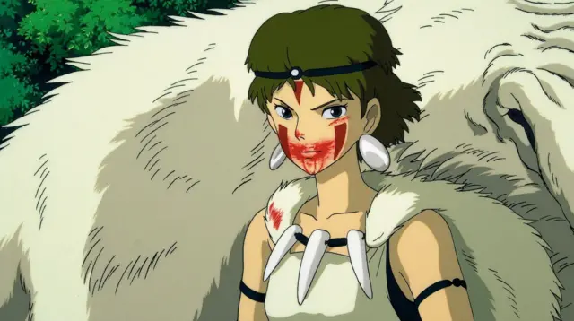

☆Gênero: Ação/ Ficção histórica/ Fantasia
☆lançamento: 25/12/1999
☆diretor(a): Hayao Miyazaki
☆Studio: Studio Ghibli
☆classificação indicativa: +12
☆Duração: 2h 13mn
avaliação:★★★★★(4,3)
Sinopse
A aldeia de Ashitaka é invadida por um estranho demônio, e quem resolve enfrentá-lo é o corajoso príncipe. Ele luta com o bicho e consegue matá-lo, mas antes fica com o braço ferido e é contaminado por uma maldição. Ele irá se corroer pelo ódio até se tornar um demônio igual ao outro e morrer, a não ser que ele vá atrás da cura na floresta proibida. É aí que começa a jornada de Ashitaka, que vai enfrentar animais fantásticos, princesas amaldiçoadas e os mistérios da natureza.